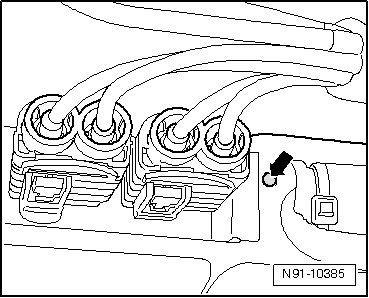

Television / Monitor: Testing and Inspection
Remote Control for Digital TV Tuner, Adapting
After removing and installing digital TV tuner it is necessary to align digital TV tuner and remote control.
- Switch on ignition.
- Switch on radio navigation system.
- In "AUX" menu, select source "AV2" as the external source. Refer to --> Owner's Manual.
- Select channel "65". Refer to --> Owner's Manual.
Menu of digital TV tuner appears.
- Take remote control and move to installation position of digital TV tuner in luggage compartment.
- Simultaneously operate button Menu on remote control and button - arrow - on digital TV tuner near harness connector for voltage supply.

Use pointed object to operate button on digital TV tuner, for example ball point pen or similar.
Main menu appears on monitor when adaptation procedure was successful. In addition, system reacts on commands given via remote control.